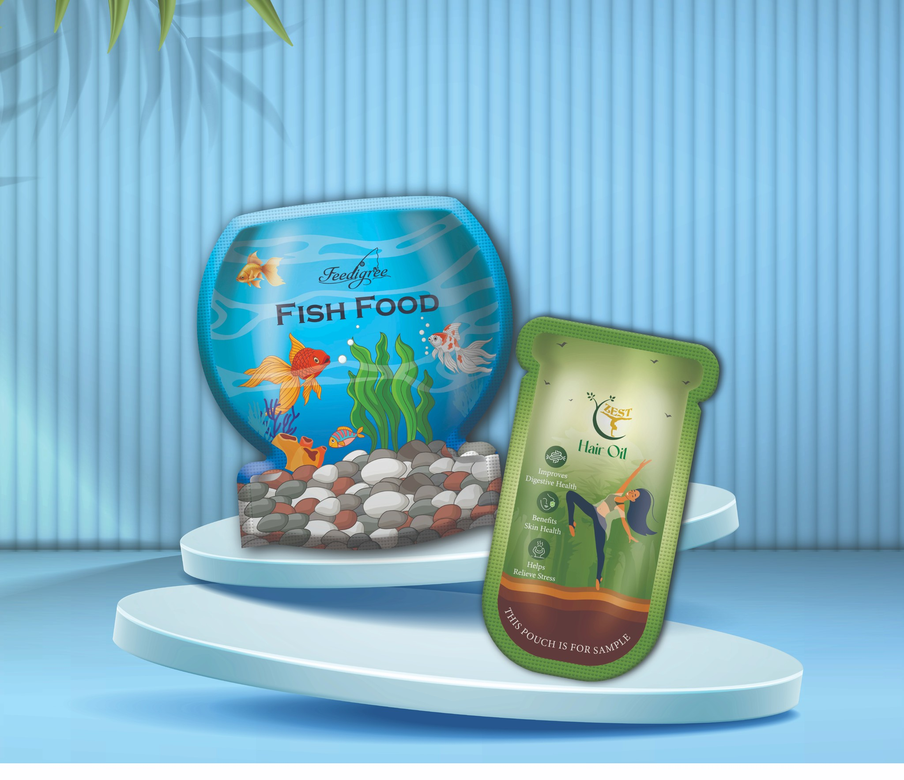
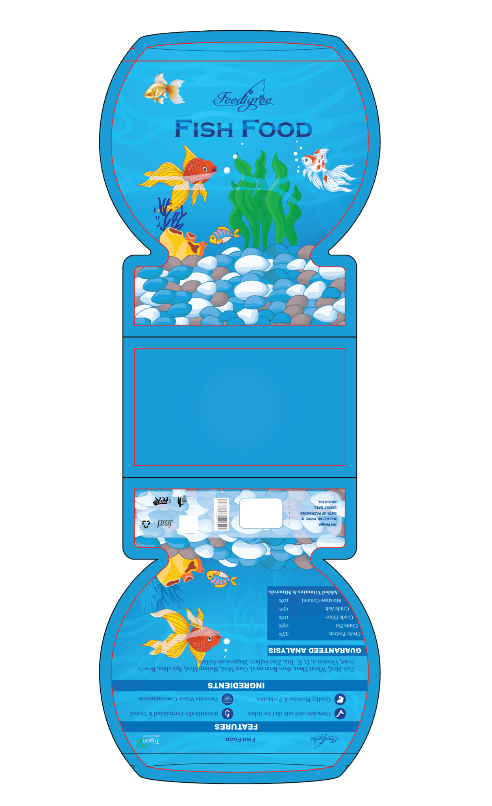
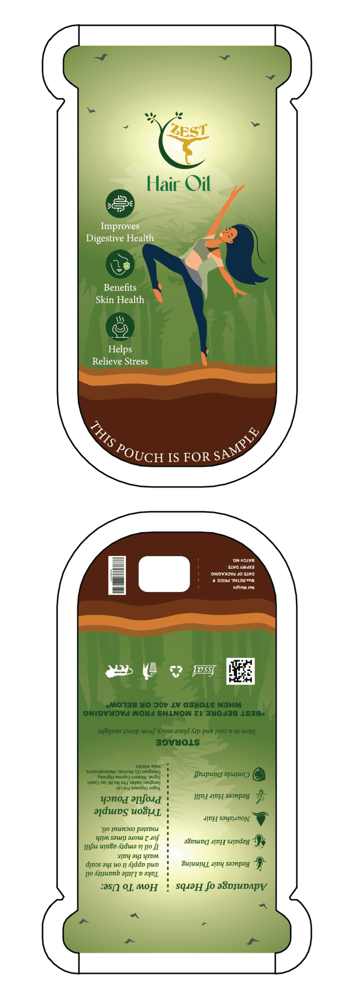
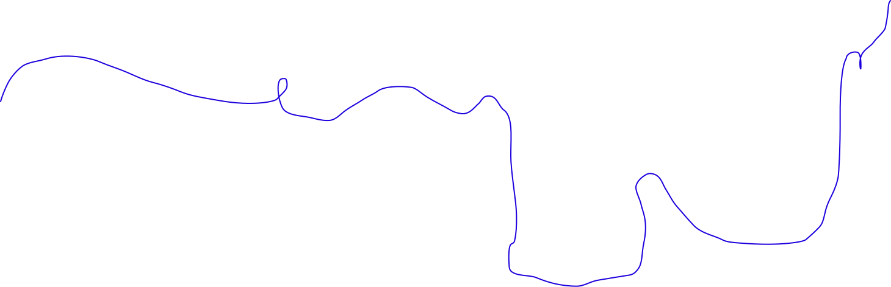
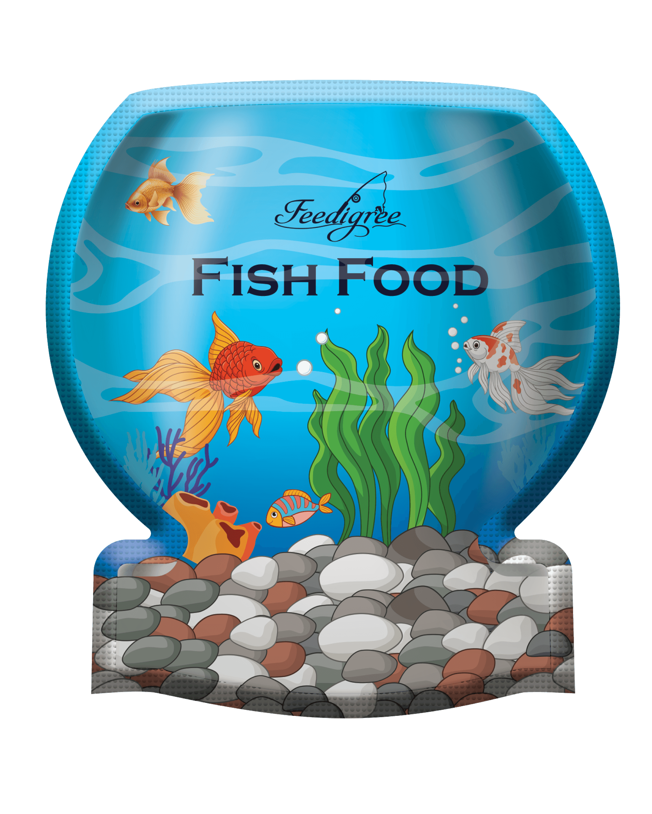
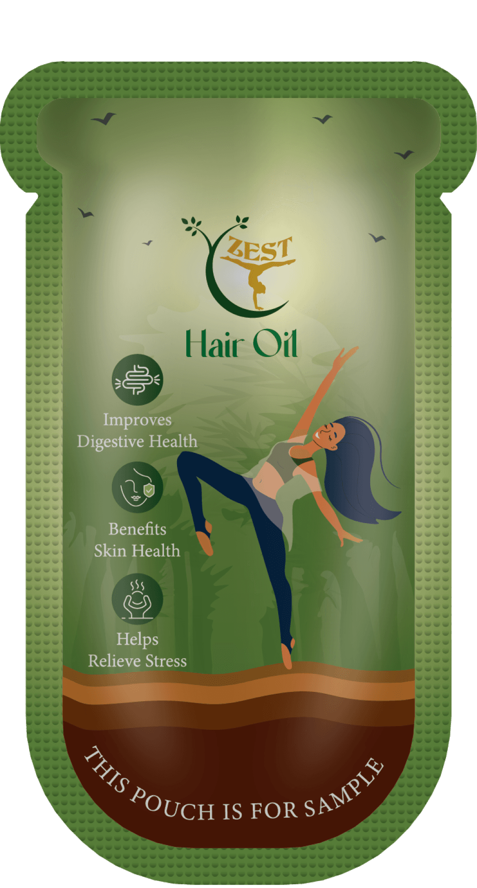
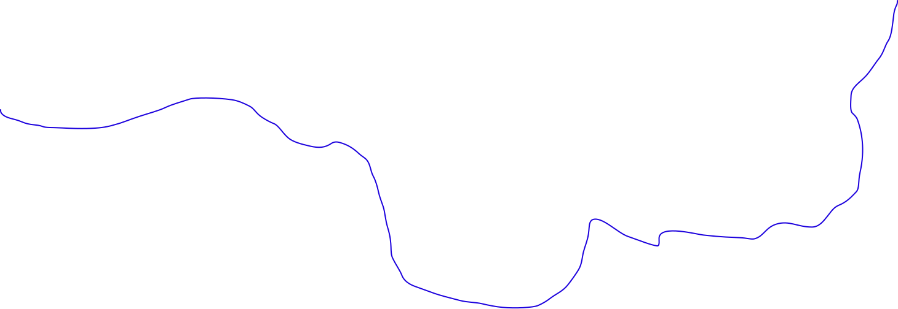

SELECTED WORK

05 · SHAPE-LED PACKAGING
SHAPE POUCH
Shape Pouch explores how packaging form can communicate a product category before the graphics are even read. Two custom silhouettes were developed for fish food and hair oil, using distinctive forms and contrasting visual identities to create clear shelf differentiation.

SHAPE DEVELOPMENT
FORM FOLLOWS THE PRODUCT
Custom keylines were developed around the visual characteristics of each product category. The fish food pouch takes inspiration from a fish bowl, while the hair oil pack uses a tall, bottle-like form, allowing the packaging shape itself to become part of the product identity.



FINAL APPLICATION
THE FINAL FORMS
The final designs bring the shape-led approach to life, with each pouch creating a distinct visual identity for its product category. The contrasting forms, colours and illustrations help each pack stand out while demonstrating how structure can become part of the overall packaging experience.


